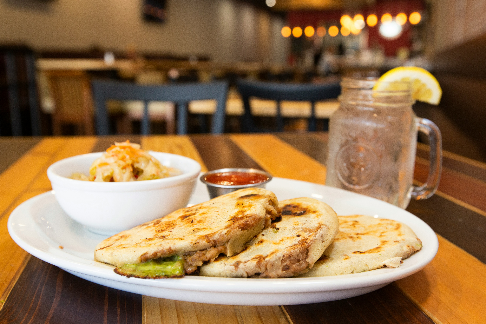

Home
Pupusas

Description
Pupusas are thick, hand-formed corn tortillas stuffed with savory fillings, originating from El Salvador. They’re griddled until golden brown and slightly crisp on the outside, with a soft, cheesy, and flavorful interior. Pupusas are a staple of Salvadoran cuisine and are traditionally served with curtido (a tangy fermented cabbage slaw) and salsa roja (a mild tomato-based sauce).
Ingredients
- Cheese
- Refried beans
- Chicharrón (seasoned pork paste)
- Maseca
Steps
- Mix Maseca, water, and a pinch of salt until a smooth, pliable dough forms — like soft playdough.
- Prepare filling by mixing cheese, refried beans, and/or chicharrón.
- Lightly oil your hands and take a golf ball–sized portion of dough. Then, flatten it into a disc in your palm (about 3–4 inches wide).
- Place some filling in the center.
- Carefully fold the edges over the filling, pinch shut, then gently flatten it back into a disc — try not to let filling spill out.
- Cook over a skillet until golden brown.
- Top or serve with curtido or tomato salsa